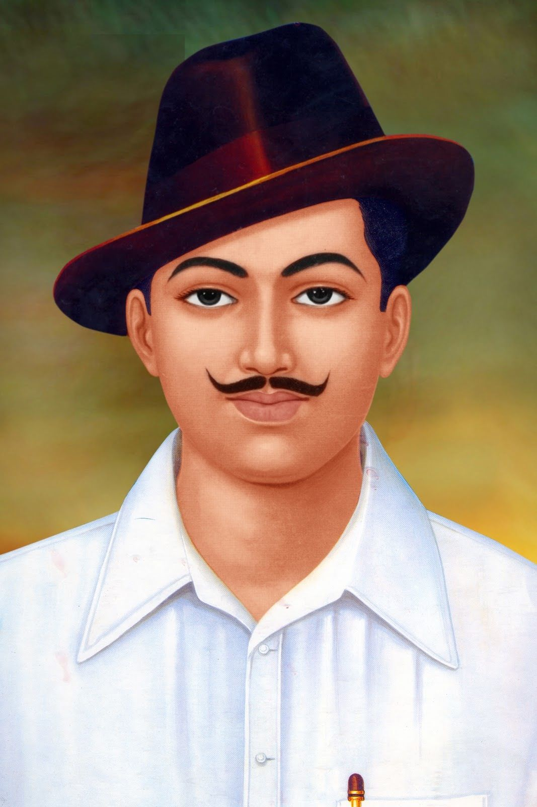

Bhagat singh
He fought for the country.He is very brave. Hemoved by the freedom struggle and the Jallianwala Bagh Massacre
that happened when he was just 12 years old, decided to be a part of the movement.For a human braveness,smartness is very important
which he have.I take him as inspiration.
